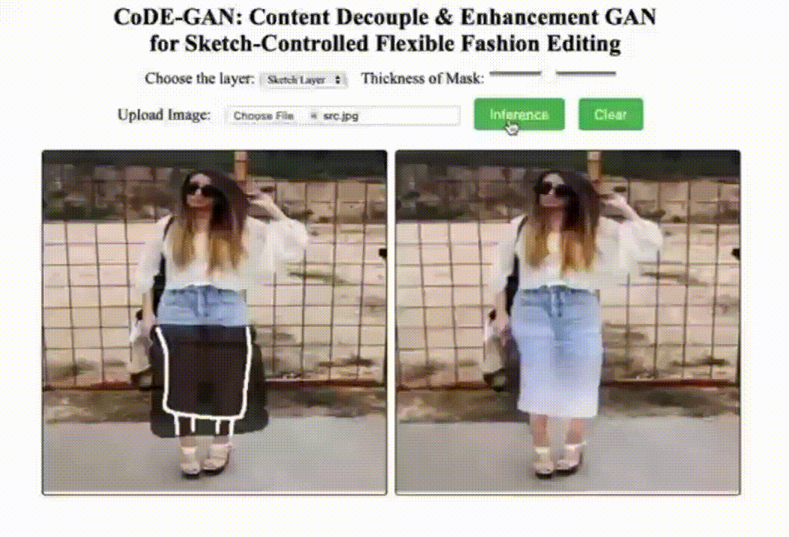

Zhengwentai Sun
The Hong Kong Polytechnic University
Hong Kong SAR, China
zhengwt.sun@connect.polyu.hk
Yanghong Zhou
The Hong Kong Polytechnic University
Hong Kong SAR, China
yanghong.zhou@connect.polyu.hk
Honghong He
The Hong Kong Polytechnic University
Hong Kong SAR, China
honghongvicky.he@connect.polyu.hk
P. Y. Mok
The Hong Kong Polytechnic University
Hong Kong SAR, China
tracy.mok@polyu.edu.hk
Demo
Please visit our online demo at
Here.
